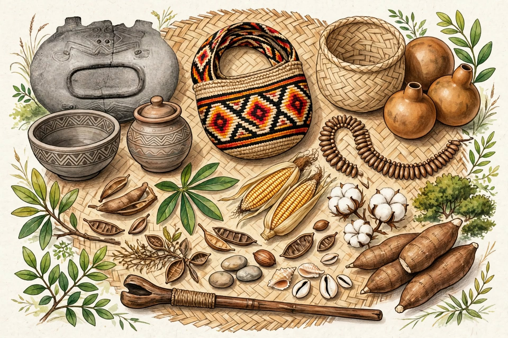
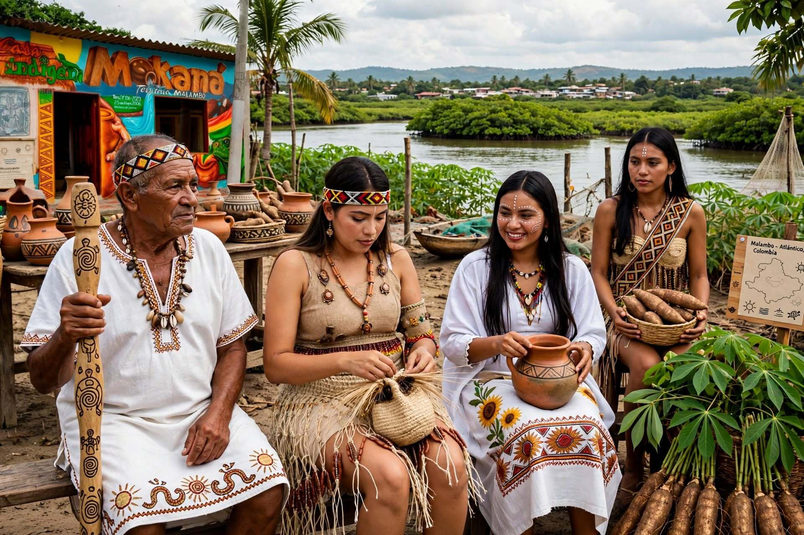
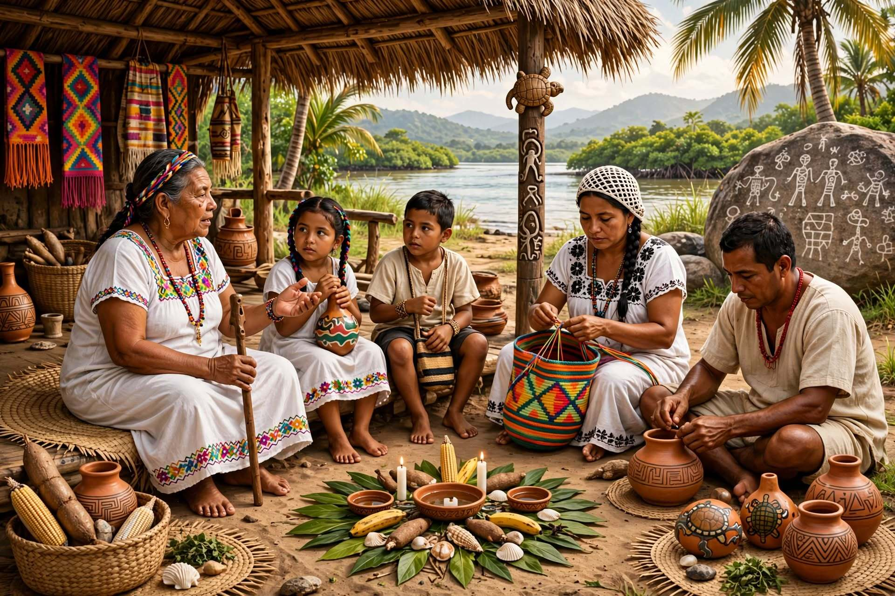
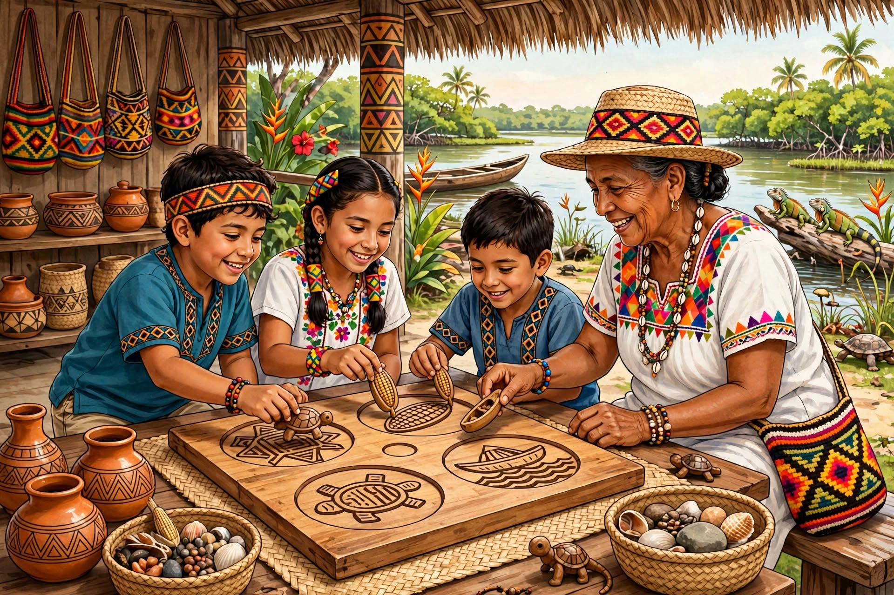
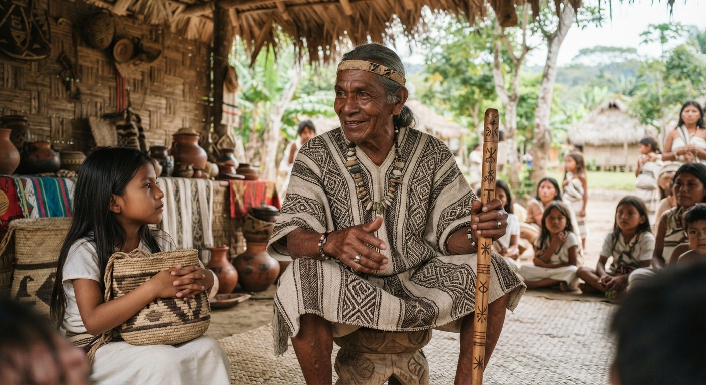

Diccionario Mokaná
Consulta palabras y expresiones del vocabulario Mokaná en un espacio pensado para aprender.
Explorar diccionario →Portal educativo para aprender, preservar y compartir la cultura Mokaná.

Explora vocabulario, relatos, juegos y voces de la memoria sobre los conocimientos y expresiones culturales del pueblo Mokaná.
Los saberes y materiales educativos se organizan con participación comunitaria y validación cultural.
Ordenados para tu recorrido educativo. Toca cualquier tarjeta para entrar.

Consulta palabras y expresiones del vocabulario Mokaná en un espacio pensado para aprender.
Explorar diccionario →
Descubre historias, memoria oral y prácticas culturales con respaldo y validación comunitaria.
Ver relatos →
Pon a prueba tus conocimientos con preguntas dinámicas y educativas.
Jugar ahora →
Conoce cómo participar, los colaboradores autorizados, la documentación y el reconocimiento de fuentes.
Explorar voces →Escribe una palabra para buscar o toca una de las palabras rápidas de ejemplo.
Selecciona uno de los dos relatos de prueba para leer su resumen y reflexión.
Elige una de las tres actividades para probar diferentes formas de jugar:
La participación se construye de manera respetuosa y acordada con la comunidad, evitando que la digitalización se convierta en una extracción de conocimientos sin participación comunitaria. Quienes deseen aportar saberes, testimonios o materiales lo hacen mediante diálogo y consentimiento previo.

Personas de la comunidad que comparten relatos, expresiones y saberes y autorizan expresamente cómo y cuándo se presentan en el portal.
Acompañan el enfoque pedagógico y la revisión comunitaria para que cada contenido conserve su sentido y pertinencia.
Cada aporte pasa por un proceso cuidadoso de registro, organización y revisión junto con las personas autorizadas, verificando claridad, contexto cultural y respeto antes de integrarse a los espacios educativos.
Todo material reconoce de forma visible y transparente a sus autores, fuentes, relatores y comunidades de origen, garantizando crédito, trazabilidad y respeto por la autoría colectiva e individual.
Sabedores, docentes y jóvenes pueden sumarse al nodo.
Bienvenido a Nodos de Memoria Mokaná. Este espacio promueve el aprendizaje y la participación comunitaria respetando la autoría y validación de las fuentes.